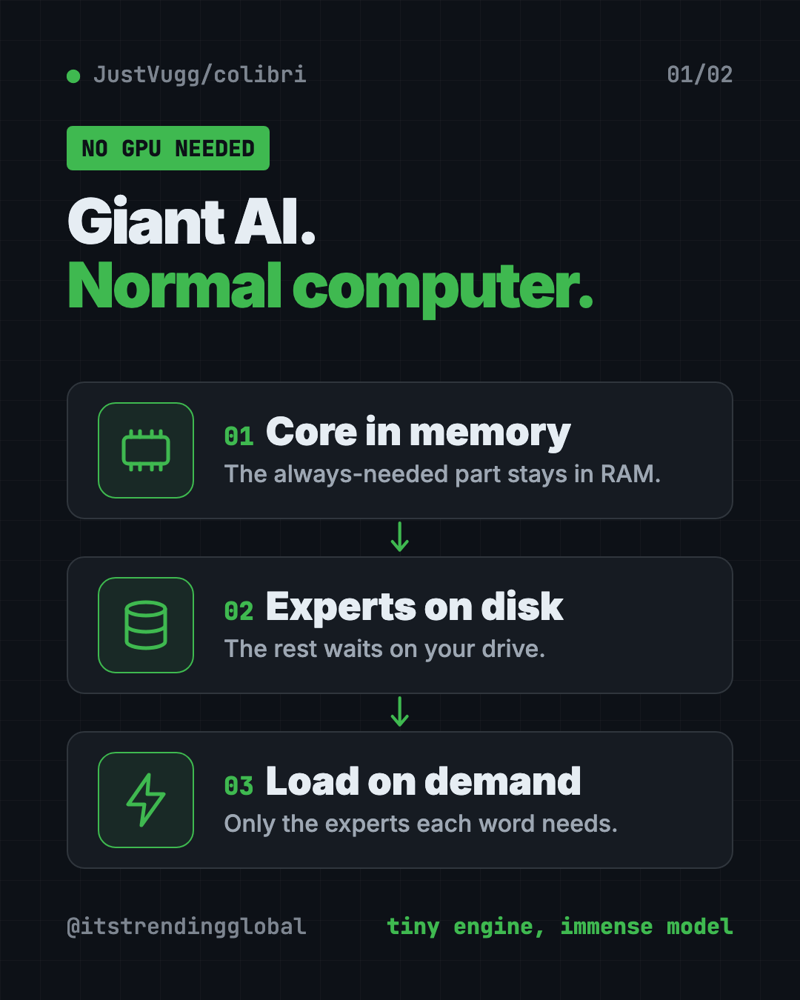
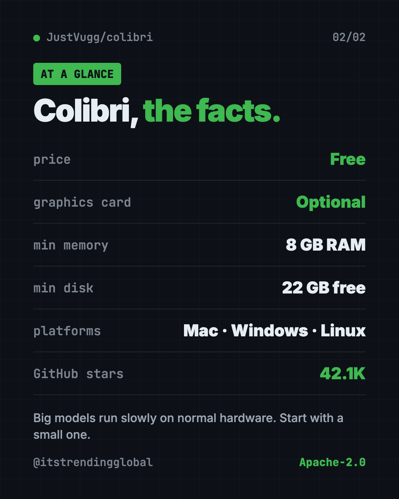

Colibri: Run Large AI Models Locally Without a GPU
- Free AI tools
- Published 2026-10-15
- 7 min read
- Updated 2026-10-16
- Stars 42.1K
- License Apache-2.0
- By the It's Trending Global team
Colibri is a free tool to run large AI models locally on the computer you already own. No graphics card needed: it reads most of the model from disk.
Colibri lets you run large AI models locally on the computer you already own, with no graphics card required. It keeps a small part of the model in memory and reads the rest from your disk only when needed.
The README sums it up in four words: "Tiny engine, immense model."
Key takeaways
- Free and open source under the Apache-2.0 license. About 42.1K stars on GitHub.
- No graphics card needed. Every model runs on a normal processor. A graphics card is a bonus, not a must.
- Starts at 8 GB of memory and 22 GB of free disk for the smallest model. 16 GB or more is better.
- One-step setup on Mac, Windows and Linux. It checks your computer and picks a model that fits.
- Private. The model runs on your own machine after the download.
What is Colibri?
The smartest open AI models are huge. Some are hundreds of gigabytes. Normally you need expensive graphics cards to run them, so most people send their questions to a company's servers instead.
Colibri takes a different path. Many big models are built as a "mixture of experts." Think of a hospital full of specialists. For each word it writes, the model only calls a few specialists, not the whole building.
So Colibri keeps the always-needed part in your computer's memory (RAM). The specialists stay on your disk. When the model asks for one, Colibri reads it from the disk. A cache learns which specialists you use most and keeps them close.
The README gives an example. GLM-5.2 has 744 billion parameters. It uses about 40 billion for each word, and only about 11 GB of those change from one word to the next.

Which AI models can Colibri run?
Colibri has thirteen engines today. Most are chat models. One makes pictures. A few answer yes-or-no style decisions.
- Small models that fit in memory: Qwen3.6, Qwen3-Coder (for code) and Qwen-Image-2.1 (text to picture).
- Large models that stream from disk: DeepSeek V4 Flash, MiMo-V2.6 Flash, Qwen3.8-Flash-Next, GLM-5.2 and more.
- The biggest: Kimi K3, at 2.8 trillion parameters and a 1.56 TB download.
You don't need to pick by hand. The setup looks at your memory, disk and processor, then recommends the most capable model that fits.
⚠️ Heads up: Big models are slow on normal computers. The README lists GLM-5.2 at 0.05 to 0.1 tokens (word pieces) per second on a 25 GB laptop when cold. The small Qwen3.6 model is far quicker: about 6 tokens per second on a desktop processor. Start small.
How to use Colibri (real examples)
- Private chat. Ask questions about a contract or health letter without sending it to a company's server.
- A local coding helper. Colibri speaks the same "language" as OpenAI and Anthropic. The README says Claude Code and coding editors can connect to it.
- Make pictures. Qwen-Image-2.1 turns text into images. The README timed one picture at 2 minutes 40 seconds on a processor. Note: that model is for non-commercial use only.
- Quick yes or no decisions. A feature called System One answers set questions with a percentage, like "merge, request changes or close?" for a code review.
- Learn how AI works. The dashboard shows each expert light up as the model thinks. It's a fun way to see what's going on inside.
Is Colibri free?
Yes. Colibri is free and open source under Apache-2.0. You can use it at home or at work.
Each AI model keeps its own license, though. The README notes that GLM-5.2 is released under MIT, while Qwen-Image-2.1 is for non-commercial use only. Check the model's license before you use it for business.
What computer do you need?
Here are the minimums from the README:
- Memory (RAM): 8 GB at the very least. 16 GB or more is better.
- Disk: 22 GB free for the smallest model. Big models need far more, from 85 GB up to 1.56 TB.
- Graphics card: optional. Colibri can use NVIDIA, AMD, Intel and Apple chips when they help.
- Internet: needed for the download.
For the large models, your disk sets the speed. A fast NVMe drive (a modern solid-state drive) helps most.
Colibri at a glance
| Price | Free |
| Works offline | Yes, after the model download |
| Platforms | Mac, Windows, Linux |
| License | Apache-2.0 (each model has its own license) |
| Minimum | 8 GB RAM, 22 GB free disk |
| Graphics card | Optional |
| Best for | Curious people and tinkerers who want private AI at home |

How to install Colibri
These are the official steps from the README. The setup asks you one question (which model) and the Enter key takes its suggestion.
Windows:
- On the Colibri GitHub page, click Code, then Download ZIP, and unzip it.
- Double-click START-HERE.bat in the folder. If Python is missing, it offers to install it.
Mac (needs Homebrew, a free app installer). Open Terminal, then copy and paste this:
xcode-select --install
brew install libomp git python
git clone https://github.com/JustVugg/colibri
cd colibri
./start-here.sh
Linux (Ubuntu or Debian). Copy and paste this:
sudo apt install git python3 build-essential
git clone https://github.com/JustVugg/colibri
cd colibri
./start-here.sh
The setup then checks your machine, picks a model, builds or downloads the engine, and downloads the model. It shows progress, and you can stop and resume the download any time. When it's done, a dashboard opens in your browser.
Next time, just run START-HERE.bat or ./start-here.sh again. It starts right away with no new download.
Want to see every model compared with your computer first? Copy and paste this:
./start-here.sh --list
💡 Tip: Short on disk space? Add
--dirand a folder on a bigger drive, like an external SSD. The README says this is the fix for "needs N GB free."
Let Claude or Codex set it up for you
Claude Code and OpenAI Codex are AI helpers that run setup steps on your computer. You paste a request and approve each step. Colibri even ships a guide written for AI helpers.
The README suggests this exact request. Copy and paste this:
Set up colibri on this machine following docs/AI_SETUP.md from https://github.com/JustVugg/colibri
The README says that guide tells the helper to ask you before it downloads a model or installs a system package.
Then try asking:
Which Colibri model fits my computer best? Explain the speed I should expect.
Connect Claude Code to my local Colibri server and test it with one question.
Colibri says there isn't enough disk space. Help me move the models to my external drive.
Our take
Colibri is a clever idea done with care. It makes giant open models reachable on normal hardware, and the README is honest about speed.
What we like:
- No graphics card needed.
- One-step setup that picks a model for your machine.
- Works with apps that already talk to OpenAI or Anthropic.
- Clear docs, in six languages, with real measured numbers.
What to watch for:
- Big models are slow without strong hardware. Expect seconds per token, not tokens per second.
- Chat model downloads are large, from 19 GB to over 1.5 TB.
- Some models have their own limits, like non-commercial use only.
- It's a young, fast-moving project. Some GPU paths are not fully measured yet.
Want your own private AI without the tinkering? Try Odysseus, a private AI workspace on your own machine, or Project NOMAD, which brings AI and Wikipedia offline. To study your own files with a local model, see our Open Notebook guide.
FAQ
Can I run large AI models locally without a GPU?
Yes. Colibri runs every model on a normal processor. A graphics card only makes it faster.
How much RAM does Colibri need?
The README says 8 GB at the very least, and 16 GB or more is better. The largest models want 32 GB or more to run at their measured speed.
Is Colibri free?
Yes. It is free and open source under Apache-2.0. Each AI model you download keeps its own license.
How fast is Colibri?
It depends on the model and your disk. Small models like Qwen3.6 run at a few tokens per second. Huge ones can take many seconds per token on a laptop.
Does Colibri work offline?
Yes, after you download a model. The model then runs fully on your own computer.
Does Colibri work on Mac and Windows?
Yes. It runs on Mac, Windows and Linux, with a one-step setup on each.
Get Colibri: github.com/JustVugg/colibri
Follow ITG Now on Instagram for one free, useful tool every day.
Keep reading

DBX: Free Database Client for 100+ Databases, With AI (2026)
DBX is a free database client that opens 100+ kinds of databases in a 25 MB app. Its AI helper turns plain English into database queries for you.

PureMac: Free CleanMyMac Alternative, No Subscription
PureMac is a free CleanMyMac alternative. It clears junk, fully uninstalls apps and finds duplicates, with no subscription, no tracking and no scare tactics.

Strata: Run Big Local AI on a Gaming PC, Free
Strata is a free installer that runs big, private local AI on a gaming PC. It sets up a large Qwen model, so your chats never leave your computer.